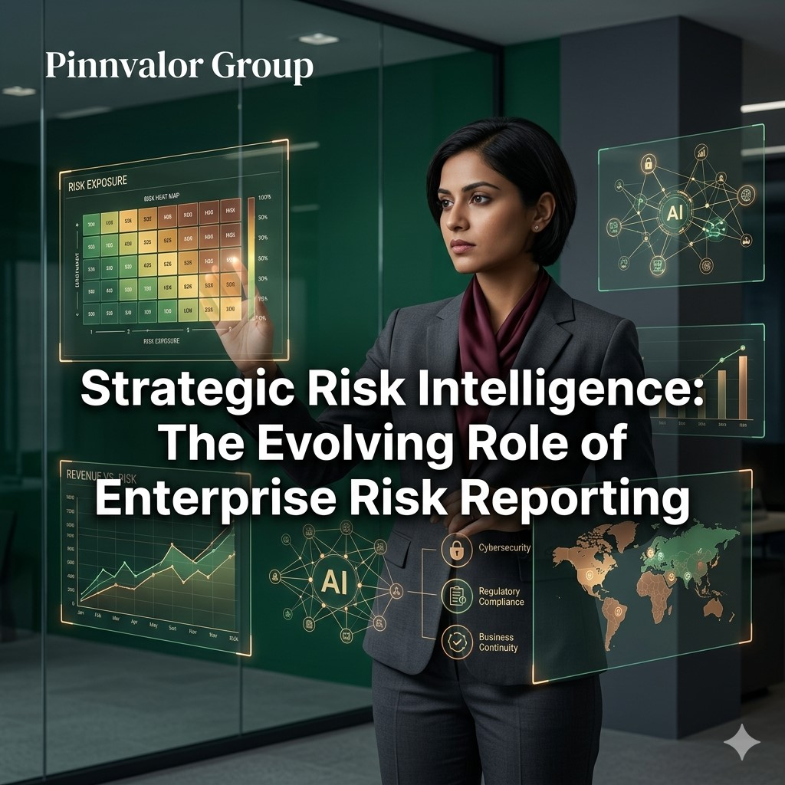

𝗦𝘁𝗿𝗮𝘁𝗲𝗴𝗶𝗰 𝗥𝗶𝘀𝗸 𝗜𝗻𝘁𝗲𝗹𝗹𝗶𝗴𝗲𝗻𝗰𝗲: 𝗧𝗵𝗲 𝗘𝘃𝗼𝗹𝘃𝗶𝗻𝗴 𝗥𝗼𝗹𝗲 𝗼𝗳 𝗘𝗻𝘁𝗲𝗿𝗽𝗿𝗶𝘀𝗲 𝗥𝗶𝘀𝗸 𝗥𝗲𝗽𝗼𝗿𝘁𝗶𝗻𝗴
In today’s volatile business environment, organizations are no longer evaluated solely on profitability and growth. Investors, regulators, boards, and stakeholders increasingly assess how effectively businesses identify, manage, and communicate risks. As global markets become interconnected and disruptions grow more frequent, Enterprise Risk Management (ERM) has evolved from a compliance-driven function into a strategic decision-making framework.
Is your business truly prepared for risks you cannot yet see?
Strong businesses are not built by avoiding risks — they are built by understanding, managing, and communicating them effectively.
Modern risk reporting is not just about documenting threats — it is about delivering strategic risk intelligence that empowers leadership teams to anticipate uncertainty, improve resilience, and make informed decisions with confidence.
Understanding Enterprise Risk Management (ERM)
Enterprise Risk Management is a structured and integrated approach used by organizations to identify, assess, monitor, and manage risks across all business functions. Unlike traditional silo-based risk management, ERM creates a centralized framework that aligns risk oversight with business objectives and corporate strategy.
ERM focuses on both downside risks and upside opportunities. It enables organizations to:
- Protect enterprise value
- Improve strategic planning
- Strengthen operational resilience
- Enhance governance and compliance
- Support sustainable growth
- Increase stakeholder confidence
The Evolution of Risk Reporting
Risk reporting has undergone a significant transformation over the last decade. Earlier, organizations treated risk reporting as a static compliance exercise, often limited to audit findings and regulatory disclosures. Today, businesses require dynamic, forward-looking risk intelligence capable of supporting real-time strategic decisions.
Traditional Risk Reporting
- Historical and reactive information
- Spreadsheet-based reporting systems
- Department-specific risk visibility
- Limited board-level insights
- Focus on compliance requirements
Modern Strategic Risk Reporting
- Predictive and data-driven insights
- Enterprise-wide risk visibility
- Real-time dashboards and analytics
- Scenario planning and stress testing
- Integration with strategic planning
- Continuous monitoring and reporting
This evolution reflects the growing recognition that risk intelligence is essential for organizational agility and long-term competitiveness.
Why Strategic Risk Intelligence Matters
Organizations today face a wide spectrum of interconnected risks that can rapidly disrupt operations, finances, and reputation. Strategic risk intelligence allows businesses to move from reactive risk response to proactive risk anticipation.
Key Benefits of Strategic Risk Intelligence
1. Improved Decision-Making
Executives and boards can make informed decisions when they have access to accurate and timely risk insights. Strategic risk reporting helps leadership evaluate potential outcomes before executing major business initiatives.
2. Enhanced Business Resilience
Businesses with mature ERM frameworks are better prepared to withstand economic downturns, cyber threats, supply chain disruptions, and geopolitical uncertainties.
3. Stronger Corporate Governance
Transparent risk reporting strengthens governance structures and improves accountability across departments and leadership teams.
4. Increased Investor Confidence
Investors prefer organizations that demonstrate disciplined risk oversight and proactive risk mitigation strategies.
5. Better Regulatory Compliance
Regulators increasingly expect businesses to maintain robust enterprise-wide risk management systems supported by effective reporting mechanisms.
Core Components of Effective Enterprise Risk Reporting
High-quality risk reporting frameworks combine financial, operational, strategic, and compliance-related information into meaningful business intelligence.
1. Risk Identification
Organizations must identify risks across all operational areas, including:
- Financial risks
- Operational risks
- Cybersecurity risks
- Market and economic risks
- Regulatory risks
- Strategic risks
- Environmental and ESG-related risks
- Reputational risks
2. Risk Assessment and Prioritization
Each identified risk should be evaluated based on:
- Likelihood of occurrence
- Potential financial impact
- Operational disruption
- Reputational consequences
- Regulatory implications
Risk heat maps and scoring models are commonly used to prioritize critical risks.
3. Risk Monitoring
Continuous monitoring enables businesses to track emerging threats and changing risk conditions in real time.
Key Risk Indicators (KRIs) help management identify early warning signals before risks escalate into major business disruptions.
4. Risk Mitigation Strategies
Organizations must establish mitigation plans to reduce the probability and impact of identified risks. These may include:
- Internal controls
- Cybersecurity measures
- Insurance coverage
- Business continuity planning
- Diversification strategies
- Regulatory compliance programs
5. Reporting and Communication
Effective risk reporting ensures that stakeholders receive clear, concise, and actionable information.
Reports should include:
- Top enterprise risks
- Risk trends and patterns
- Mitigation status updates
- Scenario analysis outcomes
- Emerging risks
- Board-level risk summaries
The Role of Technology in Modern Risk Reporting
Technology is revolutionizing the way organizations manage and report risks. Advanced analytics, artificial intelligence, and automation are improving the speed, accuracy, and effectiveness of enterprise risk intelligence.
Key Technologies Transforming ERM
Artificial Intelligence and Predictive Analytics
AI-driven systems can analyze large volumes of structured and unstructured data to identify emerging risks and predict future risk trends.
Real-Time Risk Dashboards
Interactive dashboards provide executives with live risk indicators, allowing faster and more informed decision-making.
Automation and Integrated Reporting
Automated workflows reduce manual reporting errors and improve consistency across departments.
Cloud-Based Risk Management Platforms
Cloud technologies support centralized risk reporting and enterprise-wide collaboration across multiple business locations.
Emerging Risks Reshaping Enterprise Risk Reporting
The modern business environment continues to introduce new categories of risk that require sophisticated reporting frameworks.

Cybersecurity and Data Privacy Risks
Cyberattacks and data breaches can significantly impact operations, customer trust, and regulatory compliance.
ESG and Sustainability Risks
Environmental, Social, and Governance (ESG) reporting is becoming increasingly important for investors and regulators worldwide.
Geopolitical and Economic Uncertainty
Global conflicts, inflation, trade disruptions, and changing economic policies continue to influence enterprise risk landscapes.
Supply Chain Vulnerabilities
Businesses are increasingly exposed to supply chain disruptions caused by global dependencies and operational bottlenecks.
Digital Transformation Risks
Rapid digitalization introduces technology integration risks, cybersecurity concerns, and operational complexities.
Best Practices for Building an Effective ERM Reporting Framework
1. Align Risk Reporting with Business Strategy
Risk management should support strategic objectives rather than operate as a standalone compliance function.
2. Develop a Risk-Aware Culture
Organizations should encourage employees at all levels to identify and communicate risks proactively.
3. Use Data-Driven Insights
Leveraging analytics and automation improves reporting accuracy and enhances predictive capabilities.
4. Establish Clear Governance Structures
Defined roles, responsibilities, and reporting lines improve accountability and decision-making efficiency.
5. Continuously Update Risk Frameworks
Risk landscapes evolve rapidly, making continuous assessment and framework updates essential.
The Future of Enterprise Risk Reporting
The future of ERM lies in intelligent, predictive, and integrated risk ecosystems. Organizations are increasingly moving toward:
- AI-powered risk intelligence platforms
- Real-time enterprise risk monitoring
- Integrated ESG and financial risk reporting
- Predictive scenario modeling
- Board-level strategic risk analytics
- Cross-functional risk collaboration
As businesses navigate increasingly uncertain environments, strategic risk intelligence will become a core driver of competitive advantage and organizational resilience.
Conclusion
Enterprise Risk Reporting is no longer limited to identifying threats and satisfying compliance obligations. It has evolved into a strategic intelligence function that supports informed leadership, operational resilience, and sustainable business growth.
Organizations that invest in modern ERM frameworks, data-driven reporting systems, and proactive risk cultures are better positioned to anticipate disruptions, protect enterprise value, and seize emerging opportunities.
In an era defined by uncertainty, strategic risk intelligence is not simply a reporting requirement — it is a business necessity.